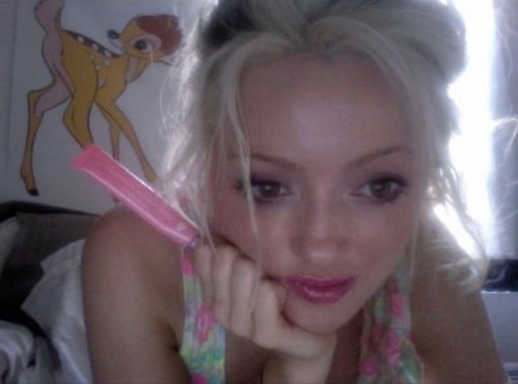

Punctum
November 5, 2021 • contributed by grll
For me, a picture reaches punctum with context. As such, most images that reach this state for me are seemingly basic for the uninitiated. This is, after all, a white girl poised for a selfie in what appears to be her bedroom. However, Cat is also a model of someone who has managed to tame her darkness and piece together the scattered shrapnel of a damaged personhood.
Cat has gone through a great deal in terms of parental neglect, drug addiction, mental health issues, and more. In short, she has Gone Through It. Even so, she retains a doe-eyed kindness in her demeanor. She has found what truly suits her—fashion and beauty writing—and has made peace with her torment.
I'm still learning how to deal with my own torment, and in college I've had my share of ups and downs. But when I look at Cat in this picture, I feel hope that I too will someday make peace with the war in my mind and focus on the joys in my life. It reminds me that recovery doesn’t require my problems to disappear—if it did, I fear I'd never recover. My issues may disfigure me, but I can still pursue the cultivation of joy and happiness wherever they remain.
Cat and I have lived very different lives and come from different backgrounds, but I find communion with her in our shared pursuit of recovered well-being. It's in this context that the image—among many others of Cat—achieves punctum for me. The energy of this image hasn’t left me since I first saw it, and I hope it never does.